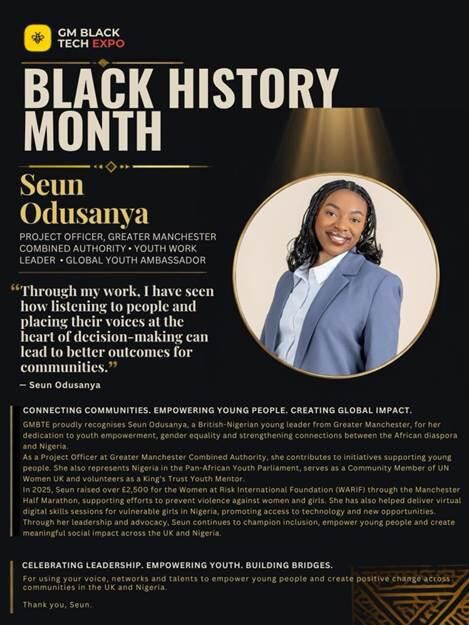

Press & blog
In the news, and in her words
Features, coverage and writing from Seun’s time at Lancaster University to the Africa Infrastructure Roundtable.
- First-Class Graduate
- UN Women UK
- Pan-African Youth Parliament
- Theirworld Ambassador
Press
In the news
- Celebrating Manchester Based Young Leader Seun OdusanyaMy Fernandez · Women’s History Month, March 2026Feature
- Graduation celebrations for Future Leader SeunLancaster UniversityNews
- Six Lancaster University stars picked out as Future LeadersLancaster UniversityNews
- The Africa Infrastructure RoundtableAfrican Tech JournalEvent
- Firm to host Africa Infrastructure Roundtable on diaspora investmentThe Guardian NigeriaEvent
- BBI Achievement Recognition Awards 2026 celebrates global excellenceBEN TelevisionAwards

Spotlight
Black History Month, GM Black Tech Expo
Seun was featured in the GM Black Tech Expo’s Black History Month spotlight, speaking about listening to people and placing their voices at the heart of decision-making.


From the archive
Where it started
Seun’s first charity mission to Nigeria, as a Lower Sixth pupil, made the local news and her school magazine.